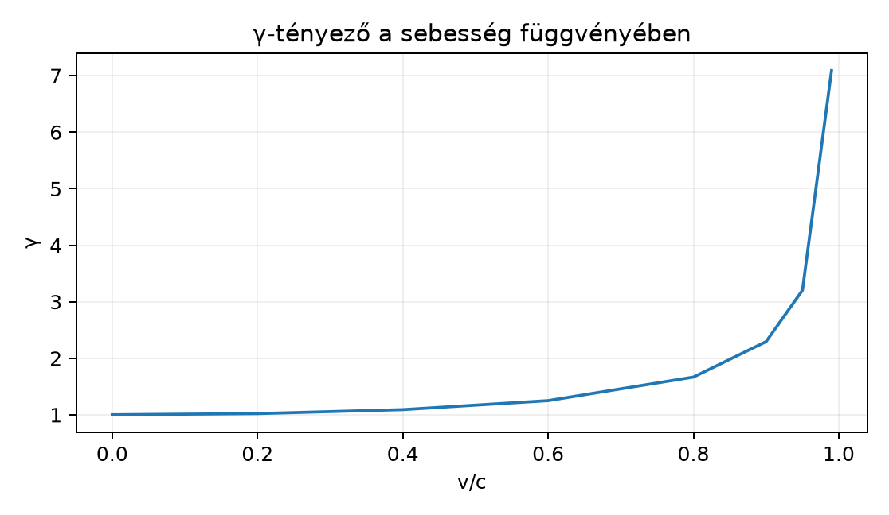

A Lorentz-boost geometriai képe egy hiperbolikus forgatás a téridő
egy idő- és egy térszerű iránya által kifeszített síkban. Az egységkört
a
és
függvények paraméterezik; az egységhiperbolát a
és
függvények:
Ha egy megfigyelő
sebességgel mozog, a rapiditás (rapidity)
a
összefüggéssel adható meg. Ebből
A rapiditás azért hasznos, mert ugyanabban az irányban egymás után
végrehajtott boostoknál a rapiditások egyszerűen összeadódnak, ahogy azt
alább bebizonyítjuk.
A
-tényező
sebességfüggését mutatja az alábbi grafikon:

γ-tényező a sebesség függvényében -
Számított értékek, 4 tizedesre kerekítve, γ=1/√(1−(v/c)²).
Kis sebességeknél
alig tér el
-től;
közeledtével
-hez
viszont
nagyon gyorsan nő.
19.3.2 A boost-rotor
definíciója
Legyen
egy térbeli egységvektor, és képezzük belőle az
Ez a fő különbség a térbeli forgatás
egységbivektorához képest, amelyre
.
A pozitív négyzet miatt az exponenciális sorban nem a trigonometrikus,
hanem a hiperbolikus függvények jelennek meg.
Definíció. Az
irányú,
rapiditású aktív Lorentz-boost rotorja
ahol
és
.
A boost egy
téridő-vektorra az
szendvicsszorzatként hat. A reverzióra
,
ezért
A rotor egységnyi, mert
19.3.3 Kidolgozott példa: esemény
boostolása
Válasszunk egy olyan rapiditást, amelyre a hiperbolikus függvények
értéke egyszerű:
Ez lehetséges, mert
.
A sebesség:
A félszögre:
Tekintsük az
-irányú
boostot, azaz
.
A rotor:
Alkalmazzuk ezt az
eseményre. Először a bal oldali szorzatot számítjuk ki.
Felhasználjuk, hogy
Így
Most jobbról szorzunk
-rel.
A további relációk:
Ezért
Az
tényezővel:
Tehát az aktív boost után
Ellenőrizzük a
-val
felírt aktív Lorentz-transzformációval. Mivel
és
:
A szendvicsszorzat eredménye tehát megegyezik a hagyományos aktív
boosttal.
19.3.4 A boost hatása a
bázisvektorokra, időtágulás és hosszkontrakció
Az
-irányú
boost esetén a bázisvektorok transzformációja:
Ez éppen az aktív Lorentz-transzformáció mátrixának két oszlopa.
Mivel a szendvicsszorzat lineáris, minden
vektorra:
Ez a jól ismert aktív boost
egységben.
Időtágulás levezetése. Egy mozgó óra a saját
nyugalmi rendszerében a
világvonalon mozog, ahol
a sajátidő. Az aktív boost a laboratóriumi rendszerbe viszi:
A laboratóriumi koordináta-idő a
együtthatója:
Ezért a sajátidő
tehát a mozgó óra a laboratóriumi megfigyelő szerint lassabban
jár.
Hosszkontrakció levezetése. Egy rúd a saját nyugalmi
rendszerében az
-tengely
mentén fekszik, nyugalmi hossza
.
A két végpont világvonala:
Boost után:
A laboratóriumi egyidejű mérés azt jelenti, hogy a két végpont
-együtthatója
megegyezik. Ha
-ben
,
-ben
szerepel, akkor:
Ebből
A két térszerű koordináta különbsége:
Közös nevezőre hozva és a
azonosságot használva:
Ez a hosszkontrakció: a mozgó rúd hossza a laboratóriumban rövidebb a
nyugalmi hosszánál.
19.3.5 Tétel: a rapiditások
összeadódnak
Tétel. Legyen
és
két, ugyanabban az
irányban végrehajtott boost rotorja. Ekkor a kompozíció
szintén ugyanabban az irányban ható boost, és rapiditása
Bizonyítás. Mivel
,
és az
elem önmagával kommutál,
Ezért a rapiditások egyszerűen összeadódnak. ∎
A sebességek összeadása ebből a
függvény addíciós képletével adódik. Ha
akkor
Ez a relativisztikus sebességösszeadás képlete. Figyeljük meg, hogy
ha
és
kicsi, a nevező alig tér el
-től,
és visszakapjuk a klasszikus
eredményt; a fénysebesség közelében azonban a nevező megakadályozza,
hogy az eredő sebesség elérje vagy meghaladja
-t.
19.3.6 Térbeli forgatás és boost
egységes kezelése
A forgatásoknál a generáló egységbivektor négyzete
,
a boostoknál a generáló relatív egységvektor négyzete
.
A geometriai algebra közös nyelvében ez a két eset ugyanazon
exponenciális alak része, ahol
páros fokszámú elem.
Ha
térbeli bivektor,
,
akkor
térbeli forgatás.
Ha
relativ egységvektor,
,
akkor
Lorentz-boost.
A saját, időiránytartó Lorentz-transzformációk (a
összefüggő komponense) felírhatók egy forgatás és egy boost rotorjának
szorzataként. A teljes Lorentz-csoport a tér- és időtükrözéseket is
tartalmazza; ezeket a páros
-rotorok
nem fedik le, hanem páratlan verzorokkal (például
-val)
vagy azok kompozíciójával kell kiterjeszteni. A pontos felbontás
sorrendje konvenciófüggő, de a szendvicsszorzat
a saját komponensen mindig ugyanazt a szerkezetet használja. A
relativisztikus fizikában így a mezőket is ugyanazokkal a rotorokkal
transzformálhatjuk, amit a következő alfejezetben használunk ki.
Továbbvitt eredmény. A Lorentz-rotorok
alakját és a szendvicsszorzat technikáját használjuk a Maxwell-egyenlet a téridőben: ∇F = J alfejezetben,
ahol az elektromágneses mezőt ugyanilyen rotorokkal transzformáljuk, és
a relativisztikus invarianciát ezzel igazoljuk.
19.3.7 Tipikus hibák és
félreértések
A
előjel keverése. Térbeli forgatásnál
,
és
lép fel; boostnál
,
és
lép fel. Ha valaki a trigonometrikus alakot írja, a szendvicsszorzat nem
ad Lorentz-transzformációt.
Az aktív és passzív transzformáció
összekeverése. Az itt megadott
az eseményt aktívan mozgatja a
irányba. Ha a laboratóriumi rendszerből a
sebességgel mozgó rendszerre térünk át, az inverz
szükséges. A két konvenció előjelben különbözik.
A
és
relációk előjele. Az ilyen számolásokban a
antikommutáció miatt az előjelek könnyen elromlanak. Érdemes minden
lépést kiírni, ahogy a fenti példában tettük.
A sebességösszeadásnál nem a sebességek adódnak
össze. A rotorok szorzata a rapiditások összeadását adja; a
sebességösszeadásban ezért jelenik meg a nevező. A klasszikus
csak kis sebességeknél közelítőleg igaz.
19.3.8 Feladatok
(Fogalmi) Miért pozitív a boostot generáló
elem négyzete, míg a térbeli forgatást generáló
bivektor négyzete negatív? Mit jelent ez az exponenciális
alakban?
(Kézi számolás) Legyen
és
az
-irányú
boostnál. Számítsd ki a
rotort, alkalmazd az
eseményre, és ellenőrizd az eredményt a
-s
képlettel.
(Levezetés) Vezesd le a relativisztikus sebességösszeadás
képletét a rotorok
tulajdonságából a
addíciós képletének segítségével.
(Alkalmazás) Egy űrhajó
sebességgel távolodik a Földtől. (a) Számítsd ki a rapiditást,
-t
és
-t.
(b) Ha az űrhajóban 1 év telik el, mennyi idő telik el a Földön? (c) Egy
2 m hosszú rúd fekszik az űrhajóban a mozgás irányában; milyen hosszúnak
méri a Földi megfigyelő?
19.3.9 Megoldások
1. megoldás. A relatív vektorok
.
Mivel
és
,
antikommutációval
.
A térbeli bivektorok, például
,
négyzete:
.
Ezért az utóbbihoz trigonometrikus, az előbbihez hiperbolikus
exponenciális tartozik.
2. megoldás. A félszögek:
,
.
Tehát
Számoljuk a szendvicset. Először
Ezután jobbról
:
A
és
relációkkal:
Az
tényezővel:
Ellenőrzés a
-s
képlettel:
,
.
,
.
Aktív boost:
.
.
Ez egyezik.
3. megoldás. Ha
,
akkor a két boost eredő rapiditása
.
A
addíciós képlete:
Mivel
,
ezért
Ezt
-vel
szorozva kapjuk a szokásos relativisztikus sebességösszeadást.
4. megoldás. (a)
.
.
.
Az űrhajó sajátideje
év. A Földön eltelt idő
év.
A rúd nyugalmi hossza
m. A Földi megfigyelő által mért hossz
m.
19.3.10 Rövid összefoglaló
A Lorentz-boost az STA-ban hiperbolikus forgatásként írható fel. Ha
egység relatív vektor, akkor
,
és a rapiditás
.
A boost rotorja
és a hatása
.
Ebből levezethető az időtágulás
és a hosszkontrakció
képlete. Az azonos irányú boostokra
,
ezért a rapiditások összeadódnak, amiből a relativisztikus
sebességösszeadás
következik. A forgatás és a boost közös nyelve a szendvicsszorzat; a
generáló elem négyzetének előjele dönti el, hogy trigonometrikus vagy
hiperbolikus exponenciális jelenik meg.
Továbbvitt eredmény. A Lorentz-rotorok
alakját és az
szendvicstechnikát használjuk a Maxwell-egyenlet a
téridőben: ∇F = J alfejezetben, ahol az elektromágneses mező
Lorentz-transzformációját ugyanilyen rotorokkal végezzük el.
19.3.11 Források és ellenőrzési
hiányok
A Lorentz-rotor és a rapiditás fogalma a geometriai algebra
irodalmában standard, például Hestenes és Doran–Lasenby
téridő-algebrával foglalkozó műveiben. A forrásonként eltérő jelölések
miatt különösen a boost-rotor előjele és a
definíciója konvenciófüggő; ebben a könyvben a Jelölések és konvenciók szakaszban rögzített
metrikát és
relatív vektorokat használjuk.